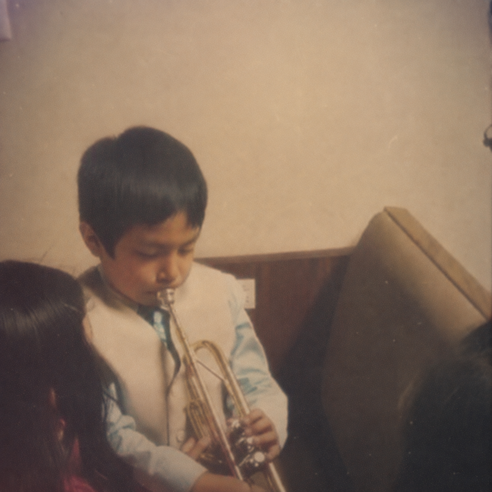
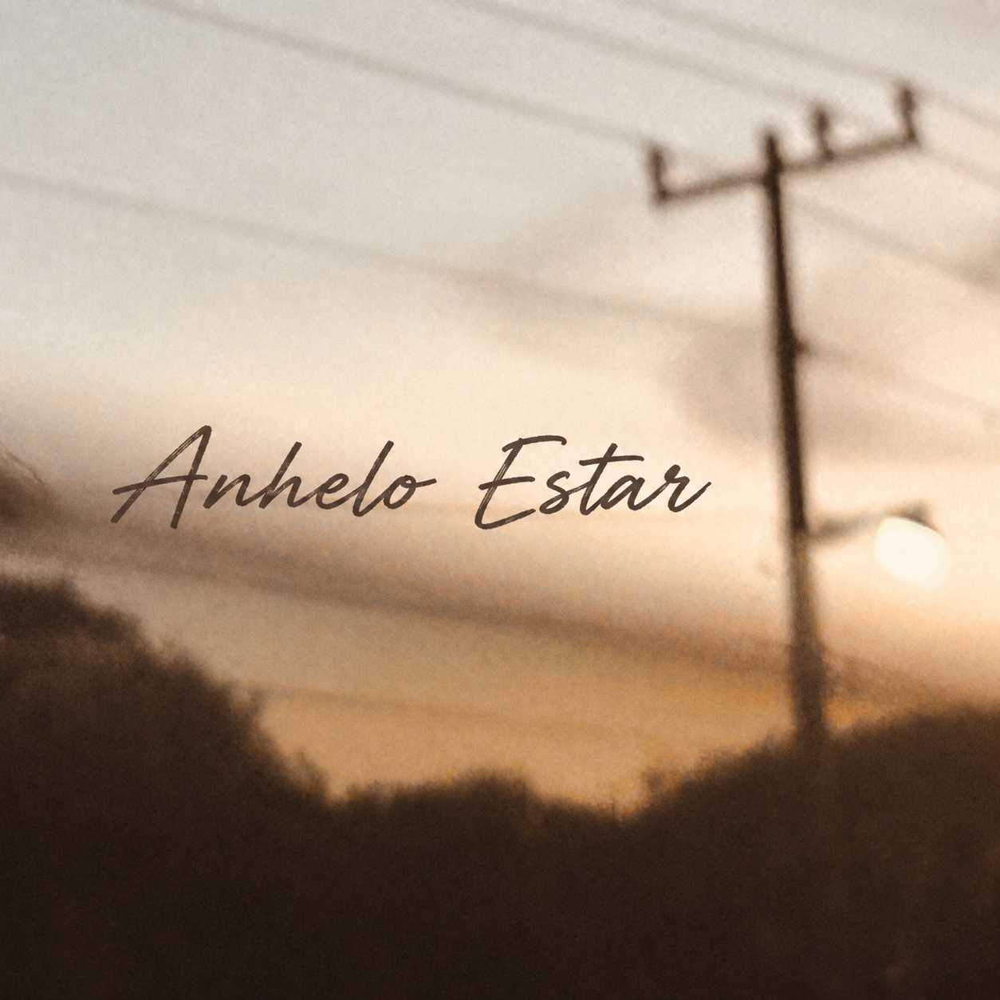
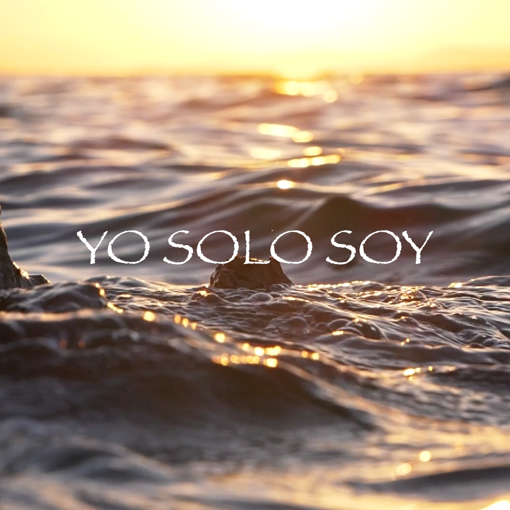
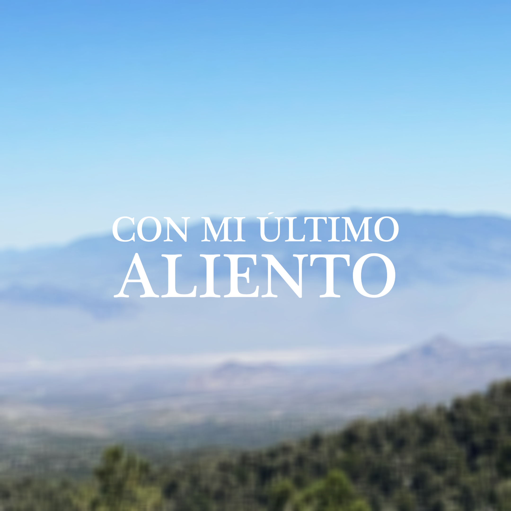

Agosto 21, 2026 • 2:46
A Tu Lado
Una declaración de permanecer junto a Dios, confiando en Él incluso cuando el camino sea difícil o no podamos entenderlo.

Agosto 7, 2026 • 2:31
Con Tenerte A Ti
Una canción sobre encontrar en Dios aquello que realmente importa, aun en medio de las bendiciones y las dificultades.

Julio 28, 2026 • 2:46
Anhelo Estar
Una canción que expresa el deseo de estar ante Dios, escuchar su voz y adorarlo por la eternidad.
Junio 22, 2026 • 3:03
Mi Razón
Una declaración de confianza en Cristo como razón, fuerza, refugio, esperanza y salvación.
Junio 13, 2026 • 4:02
Padre Amoroso
Una canción de adoración y entrega a Dios, celebrando su misericordia, poder y amor.
Junio 5, 2026 • 4:05
nunca…
Una canción sobre la fidelidad de Dios y la confianza en que Él nunca abandona ni olvida.
Mayo 8, 2026 • 2:58
Grande Eres Dios
Una alabanza de gratitud por la vida, la creación, el poder y la fidelidad de Dios.
Abril 9, 2026 • 2:57
Solo Tú
Una oración de entrega a Dios, reconociendo que solo Él conoce nuestras aflicciones y puede confortar nuestro corazón.

Enero 26, 2026 • 3:46
Yo Solo Soy
Una canción sobre reconocer que todo proviene de Dios y que nuestra vida es un instrumento de adoración a Él.
Diciembre 25, 2025 • 4:54
Estás En Cada Paso
Una expresión de gratitud y confianza en Dios, reconociendo su presencia, guía y misericordia.

Octubre 8, 2025 • 4:36
Con Mi Último Aliento
Una canción de adoración y gratitud a Dios por salvarnos y llamarnos con amor.